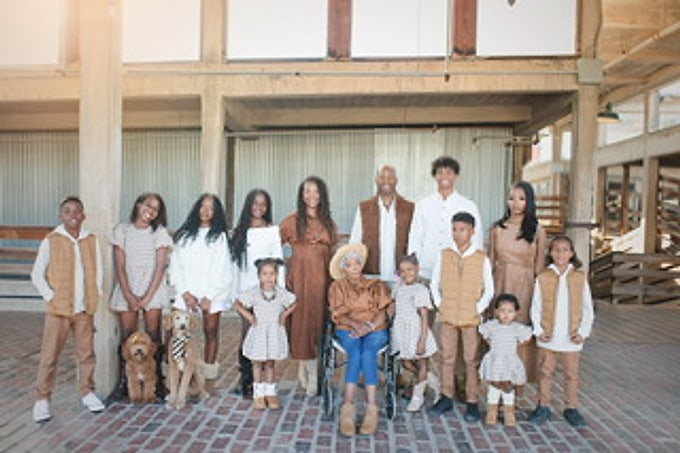

From Brokenness
To Becoming.
I'm LeeLee — a wife, a mother of eleven, and a daughter raised by a single father. For most of my life I've been the one holding everything together: my children, my family, my grandmother when she needed care, the people God placed in front of me. I did it with love. But somewhere in all that pouring out, I quietly lost track of me.
There was a season of confusion and shame — of performing on the outside while I was empty on the inside. I knew how to show up for everyone else. I didn't know how to show up as the woman God created me to be.
The turning point wasn't loud. It was a surrender. I stopped performing and started listening, and God began healing the places I had buried. What I found on the other side is the truth I now get to speak over every woman I meet: there is more within you. More than your season. More than your past. More than everything you've been carrying.
"What I found on the other side of surrender, I needed to pass on. No woman should have to find her way through the dark alone."
You Inspire Now was born from that place — not as a polished program, but as a personal mission. It's why we gather. It's why we take women outside their comfort zones on adventures like the Adventure Odyssey. And it's why I'll keep calling out the greatness I see in you until you see it too — and until you have the boldness to step into the many other areas, the many other possibilities, God is calling you to.
Because I know what it feels like to feel unseen and unvalued, we also give back through Go Inspire Now — walking beside women so that every woman we encounter feels loved, seen, and valued.
Not A Program. A Presence.
You Inspire Now is a trusted space where women discover that their past does not erase their purpose — and that healing is possible, real, and worth every step.
Called Out. Built Up. Sent Forward.
To inspire women through encouragement, empowerment, community, mentorship, and supportive connections that build resilience, strengthen identity and purpose, and help women move forward with confidence.